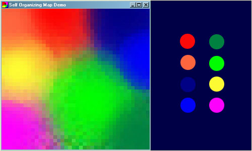
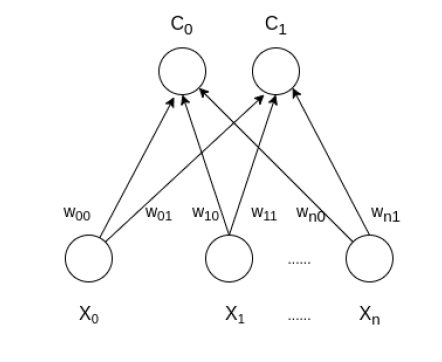
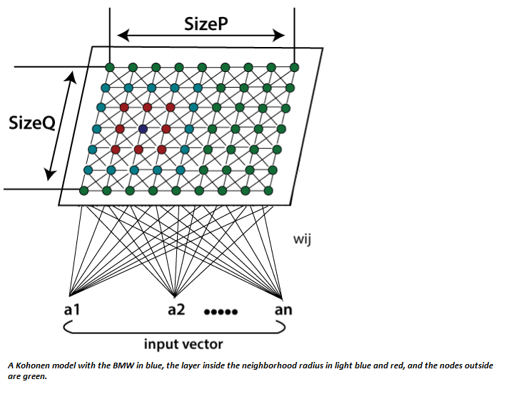
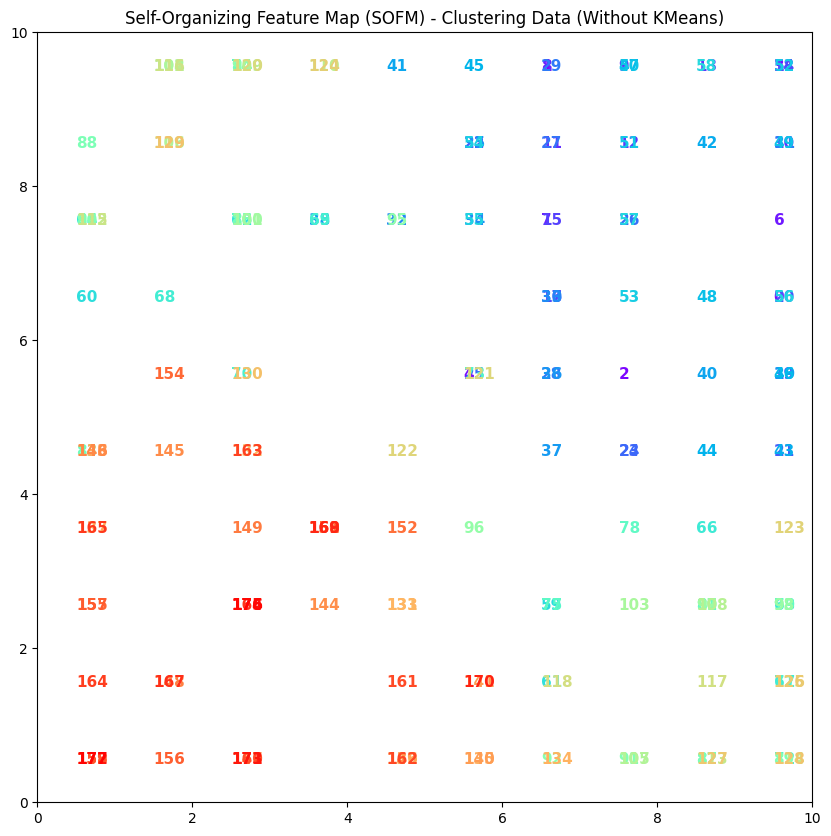

SOFM - Clustering and dimensionality reduction#
Author : Mohammad Mahdi Khorsand Aalam
Contact : Github Page

Introduction#
A self-organizing map (SOM) or self-organizing feature map (SOFM) is an unsupervised machine learning method that creates a low-dimensional representation of high-dimensional data while maintaining its topological structure. A common example for teaching SOM principles is mapping colors from their RGB components into two dimensions. The network learns to represent these colors as 3D vectors in a 2D space, clustering similar colors into adjacent regions, which is a beneficial feature of Kohonen maps.

How SOFM Works ?#
SOFM operates based on competitive learning. In this learning method, neurons in the network compete to adapt to the input, and only one or a group of neurons “win.” The winning neuron, known as the Best Matching Unit (BMU), and its neighboring neurons are updated to align with the input.

architecture of the Self Organizing Map with two clusters and n input features of any sample is given below:


Mathematical Understanding of SOFM#
1. Problem Definition and Mathematical Parameters#
In SOFM, the main objective is to map a high-dimensional input space to a lower-dimensional output space (usually 2D) while preserving the topological structure of the data.
Assume:
A high-dimensional input vector \(\mathbf{x} \in \mathbb{R}^n\), where \(n\) is the number of features (dimensions).
The SOFM network consists of a two-dimensional grid of neurons, where each neuron has a weight vector \(\mathbf{w}_{ij} \in \mathbb{R}^n\) associated with it, where \(i\) and \(j\) represent the coordinates of the neuron on the grid.
The neurons are arranged on a two-dimensional grid of size \(m \times m\). Thus, the number of neurons is \(m^2\), and each neuron has a weight vector of length \(n\), corresponding to the number of input features.
2. Finding the Best Matching Unit (BMU)#
To find the Best Matching Unit (BMU), we calculate the Euclidean distance between the input vector \(\mathbf{x}\) and the weight vector of each neuron \(\mathbf{w}_{ij}\). The formula for the Euclidean distance is as follows:
Where:
\(d_{ij}\) is the Euclidean distance between the input vector \(\mathbf{x}\) and the weight vector \(\mathbf{w}_{ij}\) of the neuron.
\(x_k\) and \(w_{ij,k}\) are the \(k\)-th components of the input vector and the neuron’s weight vector, respectively.
The neuron with the smallest distance is selected as the BMU:
3. Updating the Weights#
After finding the BMU, the weights of this neuron and its neighboring neurons in the grid are adjusted towards the input vector \(\mathbf{x}\). This process is performed such that neurons closer to the BMU undergo larger changes, while neurons further away undergo smaller changes.
The weights are updated using the following formula:
Where:
\(t\) is the time step (or learning iteration).
\(\eta(t)\) is the learning rate, which decreases over time. For example, it can decay exponentially: $\( \eta(t) = \eta_0 \cdot \exp\left(-\frac{t}{\tau}\right) \)\( where \)\eta_0\( is the initial learning rate and \)\tau$ is the time constant.
\(h_{BMU,ij}(t)\) is the neighborhood function that defines the influence of neuron \(\mathbf{w}_{ij}\) from the BMU. This function depends on the distance between neuron \((i,j)\) and the BMU and is usually defined as a Gaussian: $\( h_{BMU,ij}(t) = \exp\left(-\frac{\|\mathbf{r}_{BMU} - \mathbf{r}_{ij}\|^2}{2\sigma^2(t)}\right) \)\( where \)\mathbf{r}{BMU}\( and \)\mathbf{r}{ij}\( are the positions of the BMU and the \)(i,j)$ neuron on the grid, respectively.
\(\sigma(t)\) is the neighborhood radius, which also decreases over time. It typically decays exponentially: $\( \sigma(t) = \sigma_0 \cdot \exp\left(-\frac{t}{\tau_\sigma}\right) \)\( where \)\sigma_0\( is the initial neighborhood radius and \)\tau_\sigma$ is the time constant for the neighborhood size.
4. Learning Rate and Neighborhood Function#
There are two key factors in SOFM that change over time:
The learning rate \(\eta(t)\): Initially, it is large to allow the network to respond quickly to the input, but it decreases over time to ensure more fine-tuned learning.
The neighborhood radius \(\sigma(t)\): Initially large, it allows more neurons to be influenced by the BMU, enabling a more global learning phase. As time progresses, this radius decreases, so only neurons close to the BMU are updated, leading to finer, localized learning.
The decay of both the learning rate and the neighborhood radius ensures that the network converges to a stable mapping of the input data.
5. Topology and Mapping#
SOFM is designed to preserve the topological structure of the input data. This means that if two input vectors \(\mathbf{x}_1\) and \(\mathbf{x}_2\) are close to each other in the high-dimensional space, their corresponding BMUs should also be close to each other in the two-dimensional grid.
This topological preservation occurs because of the neighborhood function and the weight update rule that allows neighboring neurons to be updated along with the BMU. As a result, SOFM naturally clusters the data and maintains the topological structure of the input space.
General Algorithm for SOFM#
The general SOFM algorithm includes the following steps:
Initialization:
The weights of the neurons are initialized randomly.
The initial learning rate \(\eta(0)\) and neighborhood radius \(\sigma(0)\) are set.
Repeat for each input sample:
An input vector \(\mathbf{x}\) is chosen.
The distance between the input vector and the weight vector of each neuron \(\mathbf{w}_{ij}\) is calculated.
The Best Matching Unit (BMU) is identified.
The weights of the BMU and its neighbors are updated using the formulas above.
The learning rate \(\eta(t)\) and neighborhood radius \(\sigma(t)\) are decayed.
End:
The learning process is stopped after a certain number of iterations or when convergence is achieved.
Applications of SOFM#
Clustering: SOFM can automatically cluster data. Similar data points are mapped to neurons close to each other on the map.
Data Visualization: Due to SOFM’s ability to map high-dimensional data into a 2D space, it is an effective tool for visualizing data and hidden patterns within it.
Image Processing: SOFM is used in image processing and pattern recognition, as it can map image features to a simpler topological map.
Medical Data Analysis: In analyzing medical signals like EEG and ECG, SOFM helps identify significant patterns.
Market Analysis: In financial markets, SOFM can be used for clustering and analyzing behavioral patterns in financial data.
Advantages#
Unsupervised Learning: SOFM does not require labeled data and can automatically identify patterns. Topology Preservation: SOFM maps data to a 2D space while maintaining similarities and differences. Dimensionality Reduction: SOFM is one of the best methods for visualizing complex data in a 2D space. Automatic Clustering: Data is automatically clustered into different groups.
Clustering and dimensionality reduction with sofm#
In this project, we use SOFM methods and formulas to cluster and reduce data dimensions
Dataset#
The Wine dataset from the UCI Machine Learning Repository is a well-known dataset used for classification and clustering tasks. It consists of 178 instances and 13 chemical attributes that describe wines from three different classes. Key features include alcohol content, malic acid, ash, magnesium, flavanoids, color intensity, and proline levels. The dataset is typically in CSV format and is primarily used for classification, predicting the wine class based on its chemical properties. It can also be applied to clustering tasks using unsupervised learning methods like SOFM to discover patterns without labels.
Libraries#
NumPy: A powerful library for numerical computations, providing support for arrays and matrices. In the code, it is used to handle numerical data and calculations efficiently.
Pandas: A data manipulation library used for loading and organizing the dataset into a structured format (DataFrame). It simplifies data handling and processing.
MinMaxScaler (from sklearn.preprocessing): A tool to normalize the dataset by scaling features to a range (0, 1). It ensures that all features have the same weight in the SOFM training.
MiniSom: A library specifically for Self-Organizing Maps (SOMs). It helps in initializing, training, and organizing high-dimensional data into a low-dimensional grid.
Matplotlib: A plotting library used for visualizing the trained SOM and its clustering results. It helps generate graphs and scatter plots for interpretation.
Analysis of the SOFM Code with Mathematical Relationships#
1. Import Necessary Libraries#
import numpy as np
import pandas as pd
import matplotlib.pyplot as plt
Description: In this section, the required libraries for loading data, normalization, creating SOFM and drawing graphs are loaded.
Relevance: This section is known as the prerequisites for implementing SOFM and working with input data.
2. Defining the SOFM Class#
class SOFM:
def __init__(self, input_dim, map_size, learning_rate=0.5, sigma=None, max_iterations=1000):
self.input_dim = input_dim
self.map_size = map_size
self.learning_rate = learning_rate
self.sigma = sigma if sigma else map_size / 2
self.max_iterations = max_iterations
self.weights = np.random.random((map_size, map_size, input_dim))
input_dim : Number of input features. map_size : Size of the SOFM grid. learning_rate : Controls the convergence speed. sigma : The radius of the neighborhood function. max_iterations : Maximum number of training iterations. weights : Randomly initialized weight matrix for the SOFM neurons.
3. Finding the Best Matching Unit (BMU)#
def find_bmu(self, x):
distances = np.linalg.norm(self.weights - x, axis=-1)
return np.unravel_index(np.argmin(distances), distances.shape)
BMU Calculation The BMU for an input vector “x” is found by calculating the Euclidean distance to each weight vector: $\(Distance=|| \text{Weight} - x ||\)$ The index of the minimum distance is returned as the BMU.
4. Neighborhood Function#
def neighborhood_function(self, bmu, iteration):
sigma = self.sigma * np.exp(-iteration / (self.max_iterations / np.log(self.sigma)))
distances = np.linalg.norm(np.indices((self.map_size, self.map_size)).T - np.array(bmu), axis=-1)
return np.exp(-(distances ** 2) / (2 * (sigma ** 2)))
Neighborhood Function: This function computes the neighborhood influence for the BMU based on a Gaussian function:
5. Training the SOFM#
def train(self, data):
for iteration in range(self.max_iterations):
x = data[np.random.randint(0, len(data))]
bmu = self.find_bmu(x)
learning_rate_t = self.learning_rate * np.exp(-iteration / self.max_iterations)
neighborhood = self.neighborhood_function(bmu, iteration)
for i in range(self.map_size):
for j in range(self.map_size):
self.weights[i, j] += learning_rate_t * neighborhood[i, j] * (x - self.weights[i, j])
Training Process: The training process consists of the following steps:
Randomly select an input vector 𝑥
Find the BMU for 𝑥
Update the weights of the neurons using the learning rate and neighborhood function: $\(Weights_{new} = Weights_{old} + learning\_rate \cdot Neighborhood \cdot (x - Weights_{old})\)$
6. Loading the Wine Dataset#
url = "https://archive.ics.uci.edu/ml/machine-learning-databases/wine/wine.data"
data = pd.read_csv(url, header=None)
X = data.values[:, 1:]
Dataset Loading: The Wine dataset is loaded without labels for unsupervised learning.
7. Creating and Training the SOFM#
sofm = SOFM(input_dim=X.shape[1], map_size=10, learning_rate=0.5, max_iterations=1000)
sofm.train(X)
SOFM Initialization and Training: An instance of the SOFM class is created with specified parameters and trained on the Wine dataset.
8. Visualizing the Results#
plt.figure(figsize=(15, 15))
for i, x in enumerate(X):
w = sofm.find_bmu(x)
plt.text(w[0] + 0.5, w[1] + 0.5, str(i), color=plt.cm.rainbow(i / len(X)), fontdict={'weight': 'bold', 'fontsize': 14})
plt.xlim([0, sofm.weights.shape[0]])
plt.ylim([0, sofm.weights.shape[1]])
plt.title('Self-Organizing Feature Map (SOFM) - Clustering Data (Without KMeans)', fontsize=16) # Increase
plt.show()
import numpy as np
import pandas as pd
import matplotlib.pyplot as plt
from sklearn.preprocessing import StandardScaler
class SOFM:
def __init__(self, input_dim, map_size, learning_rate=0.5, sigma=None, max_iterations=1000):
self.input_dim = input_dim
self.map_size = map_size
self.learning_rate = learning_rate
self.sigma = sigma if sigma else map_size / 2
self.max_iterations = max_iterations
self.weights = np.random.random((map_size, map_size, input_dim))
def find_bmu(self, x):
""" Find the Best Matching Unit (BMU) """
distances = np.linalg.norm(self.weights - x, axis=-1)
return np.unravel_index(np.argmin(distances), distances.shape)
def neighborhood_function(self, bmu, iteration):
""" Neighborhood function (Gaussian decay) """
sigma = self.sigma * np.exp(-iteration / (self.max_iterations / np.log(self.sigma)))
distances = np.linalg.norm(np.indices((self.map_size, self.map_size)).T - np.array(bmu), axis=-1)
return np.exp(-(distances ** 2) / (2 * (sigma ** 2)))
def train(self, data):
for iteration in range(self.max_iterations):
x = data[np.random.randint(0, len(data))]
bmu = self.find_bmu(x)
learning_rate_t = self.learning_rate * np.exp(-iteration / self.max_iterations)
neighborhood = self.neighborhood_function(bmu, iteration)
for i in range(self.map_size):
for j in range(self.map_size):
self.weights[i, j] += learning_rate_t * neighborhood[i, j] * (x - self.weights[i, j])
url = "https://archive.ics.uci.edu/ml/machine-learning-databases/wine/wine.data"
data = pd.read_csv(url, header=None)
X = data.iloc[:, 1:].values
scaler = StandardScaler()
X_scaled = scaler.fit_transform(X)
sofm = SOFM(input_dim=X_scaled.shape[1], map_size=10, learning_rate=0.5, max_iterations=1000)
sofm.train(X_scaled)
plt.figure(figsize=(10, 10))
for i, x in enumerate(X_scaled):
w = sofm.find_bmu(x)
plt.text(w[0] + 0.5, w[1] + 0.5, str(i), color=plt.cm.rainbow(i / len(X_scaled)), fontdict={'weight': 'bold', 'fontsize': 11})
plt.xlim([0, sofm.weights.shape[0]])
plt.ylim([0, sofm.weights.shape[1]])
plt.title('Self-Organizing Feature Map (SOFM) - Clustering Data (Without KMeans)')
plt.show()
Output#

Interpretation of the output (colors and numbers)#
1. Colors
The colors in the plot correspond to the data points (each input feature).
Each point has a specific color assigned to it, primarily based on its position on the weight map (SOFM).
In this case, the colors do not indicate different clusters; rather, they are used for aesthetic purposes and to distinguish the points.
2. Numbers
The numbers next to each point represent the data points. In your code, these numbers are assigned sequentially to the data points and placed at their respective locations in the plot.
These numbers can represent the identifiers or indices of the data points, helping users identify the data.
3. Overall Meaning
Generally, each point on the SOFM represents input data features that are closer to a specific neuron (as the BMU).
However, in this particular implementation, there is no predefined clustering, and the numbers and colors are only used as a representation of the data.
If we want to identify specific patterns within the data, we need to look for actual clustering results and the differences between colors and numbers.
4. Summary Ultimately, in this type of visualization, colors and numbers act as tools for visualizing data points on the SOFM and help the user understand how the points are distributed in the feature space and which points are closer together.
Example#
In this plot, there may be points numbered 1, 2, 3, etc., each having different colors. These numbers simply indicate the indices of the points, and the colors are used purely for visual distinction.
References#
1. http://www.ai-junkie.com/ann/som/som1.html
2. Applications of the growing self-organizing map, Th. Villmann, H.-U. Bauer, May 1998